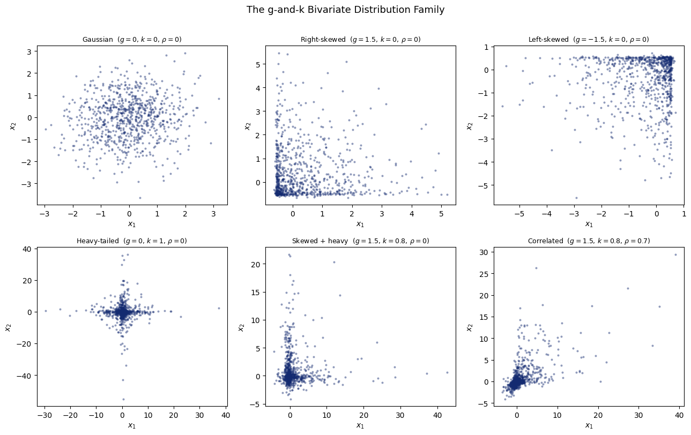
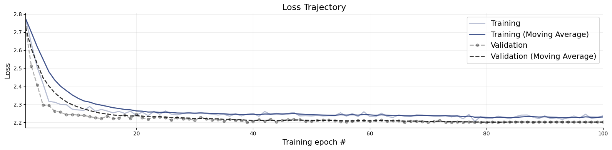
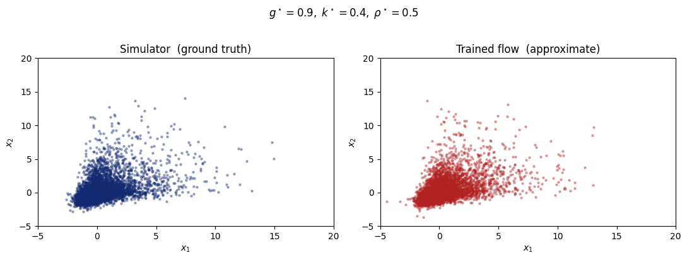
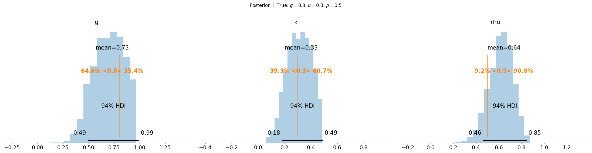

9. Likelihood Estimation for the g-and-k Distribution#
Author: Stefan T. Radev
In most BayesFlow workflows the target of learning is the posterior \(p(\theta \mid x)\). Differently, in this tutorial we learn the likelihood \(p(x \mid \theta)\) - the distribution of observations given parameters. We demonstrate how to easily plug the learned likelihood into a PyMC workflow.
9.1. A Real Challenge: Intractable Likelihoods#
Many quantities in science are defined through simulation rather than a closed-form density. The g-and-k distribution is a textbook example: it is flexible enough to model arbitrary skewness and kurtosis, but its probability density function has no closed-form expression.
For traditional MCMC (e.g., via PyMC) this creates a problem, since pm.CustomDist requires a logp function. BayesFlow solves this by learning the likelihood from simulations with a generative network, after which the learned differentiable density plugs directly into NUTS or any other sampler.
9.2. The Model#
We observe \(n\) bivariate samples from a g-and-k model with Gaussian-copula dependence:
Each marginal follows a g-and-k distribution with shared shape parameters \((g, k)\), and the two dimensions are coupled through a Gaussian copula with correlation \(\rho\). The parameters are summarized in the table below:
Parameter |
Meaning |
Prior |
|---|---|---|
\(g\) |
asymmetry (\(g>0\) → right-skewed) |
\(\text{Uniform}(-1.5,\;1.5)\) |
\(k\) |
tail weight (\(k>0\) → heavier tails) |
\(\text{Uniform}(0,\;1.5)\) |
\(\rho\) |
copula correlation |
\(\text{Uniform}(-0.9,\;0.9)\) |
import numpy as np
import matplotlib.pyplot as plt
from scipy import special
import bayesflow as bf
WARNING:bayesflow:Multiple Keras-compatible backends detected (JAX, PyTorch, TensorFlow).
Defaulting to JAX.
To override, set the KERAS_BACKEND environment variable before importing bayesflow.
See: https://keras.io/getting_started/#configuring-your-backend
INFO:2026-05-08 11:16:27,965:jax._src.xla_bridge:834: Unable to initialize backend 'tpu': UNIMPLEMENTED: LoadPjrtPlugin is not implemented on windows yet.
INFO:jax._src.xla_bridge:Unable to initialize backend 'tpu': UNIMPLEMENTED: LoadPjrtPlugin is not implemented on windows yet.
INFO:bayesflow:Using backend 'jax'
rng = np.random.default_rng(2026)
def gnk_quantile(u, a, b, g, k, c=0.8):
"""Quantile (percent-point) function of the g-and-k distribution.
Parameters
----------
u : array-like, values in (0, 1)
a : location
b : scale (> 0)
g : asymmetry (g > 0 -> right-skewed, g < 0 -> left-skewed)
k : tail weight (k > 0 -> heavier tails than Gaussian)
c : standard constant, default 0.8 per Rayner & MacGillivray (2002)
"""
z = special.ndtri(u)
return a + b * (1 + c * np.tanh(g * z / 2)) * (1 + z**2)**k * z
def sample_bivariate_gnk(g, k, rho, n, rng_inst):
"""Draw n bivariate samples from the g-and-k Gaussian-copula model.
Both marginals share the same (g, k) shape parameters.
Dependence is introduced via a Gaussian copula with correlation rho.
"""
cov = np.array([[1.0, rho], [rho, 1.0]])
z = rng_inst.multivariate_normal([0.0, 0.0], cov, size=n)
u = np.clip(special.ndtr(z), 1e-4, 1 - 1e-4)
return gnk_quantile(u, a=0.0, b=1.0, g=g, k=k)
9.3. 1. The g-and-k Distribution Family#
The g-and-k distribution is defined entirely through its quantile function:
where \(z(p) = \Phi^{-1}(p)\) is the standard-normal quantile and \(c = 0.8\).
\(g = 0,\;k = 0\) → reduces to a Gaussian
\(g > 0\) → right-skewed; \(g < 0\) → left-skewed
\(k > 0\) → heavier tails than Gaussian
9.3.1. Why the Likelihood is Intractable?#
Computing the PDF requires inverting \(Q\) numerically:
There is no closed form for \(Q^{-1}\), so evaluating the log-likelihood for \(n\) observations requires solving \(n\) scalar root-finding problems. Computing gradients through them for NUTS is an additional challenge.
Simulation-based inference with BayesFlow sidesteps this entirely. We simulate from the model and train a neural network to approximate \(p(x \mid g,k,\rho)\) directly.
vis_rng = np.random.default_rng(42)
configs = [
(0.0, 0.0, 0.0, r"Gaussian ($g=0,\,k=0,\,\rho=0$)"),
(1.5, 0.0, 0.0, r"Right-skewed ($g=1.5,\,k=0,\,\rho=0$)"),
(-1.5, 0.0, 0.0, r"Left-skewed ($g=-1.5,\,k=0,\,\rho=0$)"),
(0.0, 1.0, 0.0, r"Heavy-tailed ($g=0,\,k=1,\,\rho=0$)"),
(1.5, 0.8, 0.0, r"Skewed + heavy ($g=1.5,\,k=0.8,\,\rho=0$)"),
(1.5, 0.8, 0.7, r"Correlated ($g=1.5,\,k=0.8,\,\rho=0.7$)"),
]
fig, axes = plt.subplots(2, 3, figsize=(13, 8))
for ax, (g, k, rho, title) in zip(axes.flat, configs):
samp = sample_bivariate_gnk(g, k, rho, 800, vis_rng)
ax.scatter(samp[:, 0], samp[:, 1], s=4, alpha=0.35, color="#132a70")
ax.set_title(title, fontsize=9)
ax.set_xlabel("$x_1$")
ax.set_ylabel("$x_2$")
fig.suptitle("The g-and-k Bivariate Distribution Family", fontsize=13, y=1.01)
fig.tight_layout()

9.4. 2. Training the Likelihood Approximator#
9.4.1. Defining the Simulator#
Each call to gnk_simulator draws a single bivariate observation from the g-and-k model at a randomly-sampled parameter set \((g, k, \rho)\). We use priors that do not land us in the “near-infinite-variance” regime.
Because the \(n\) observations we will use for inference are exchangeable (i.i.d. given the parameters), BayesFlow only needs to learn the single-observation likelihood \(p(x_i \mid g, k, \rho)\) for \(x_i \in \mathbb{R}^2\). During PyMC integration the NeuralDistribution wrapper automatically sums the per-observation log-probabilities over all \(n\) data points.
def prior():
g = rng.uniform(-1.0, 1.0)
k = rng.uniform(0.0, 0.5)
rho = rng.uniform(-0.9, 0.9)
return {"g": g, "k": k, "rho": rho}
def gnk_simulator(g, k, rho):
"""Draw one bivariate observation from the g-and-k copula model."""
cov = np.array([[1.0, rho], [rho, 1.0]])
z = rng.multivariate_normal([0.0, 0.0], cov)
u = np.clip(special.ndtr(z), 1e-4, 1 - 1e-4)
x = gnk_quantile(u, a=0.0, b=1.0, g=g, k=k)
return {"x": np.clip(x, -10.0, 10.0)}
simulator = bf.make_simulator([prior, gnk_simulator])
test_batch = simulator.sample(3)
print("x shape:", test_batch["x"].shape)
print("g shape:", test_batch["g"].shape)
print("k shape:", test_batch["k"].shape)
print("rho shape:", test_batch["rho"].shape)
x shape: (3, 2)
g shape: (3, 1)
k shape: (3, 1)
rho shape: (3, 1)
9.4.2. Training Setup#
The network models \(p(x \mid g, k, \rho)\) where \(x \in \mathbb{R}^2\). For demonstration purposes, we train a normalizing flow with a spline transform (i.e., a “neural spline flow”). Despite developments in free-form architecture, such as diffusion models, normalizing flows are still attractive because they can perform single-step density evaluation. The variable roles are reversed compared to posterior estimation:
Role |
Variable |
Meaning |
|---|---|---|
|
\(x\) |
what the network models (the 2-D observation) |
|
\([g,\,k,\,\rho]\) |
the conditioning parameters |
We pass the three parameters as separate keys; BayesFlow’s adapter automatically concatenates them into a single conditions vector before passing to the network.
Training takes approximately 4-5 minutes with JAX on a CPU and around 20 seconds on GPU.
workflow = bf.BasicWorkflow(
simulator=simulator,
inference_network=bf.networks.CouplingFlow(
transform="spline",
depth=2,
# For heavier-tail likelihoods, you can play around with
# base_distribution=bf.distributions.DiagonalStudentT(df=20),
),
inference_variables="x",
inference_conditions=["g", "k", "rho"],
standardize="all",
)
history = workflow.fit_online(
epochs=100,
num_batches_per_epoch=100,
batch_size=256,
validation_data=1024
)
Let’s briefly inspect convergence. The loss curve should resemble a smooth exponential decay.
f = bf.diagnostics.plots.loss(history)

9.5. 3. Evaluating the Learned Likelihood#
9.5.1. Comparing Simulator and Flow Samples#
As a quick check, we fix \(\theta^\star = (g=0.9,\;k=0.4,\;\rho=0.5)\), a right-skewed, moderately heavy-tailed, positively-correlated bivariate distribution. We then draw 800 samples from both:
Simulator (ground truth): exact samples from the g-and-k model via the quantile function
Trained flow (approximation): samples from the learned likelihood
The two scatter plots should be nearly indistinguishable, confirming the flow captures the distributional shape correctly.
g_star, k_star, rho_star = 0.9, 0.4, 0.5
true_samples = sample_bivariate_gnk(g_star, k_star, rho_star, n=5000, rng_inst=rng)
approx = workflow.sample(
num_samples=5000,
conditions={
"g": np.array([[g_star]]),
"k": np.array([[k_star]]),
"rho": np.array([[rho_star]]),
},
)
approx_x = approx["x"][0]
print("approx_x shape:", approx_x.shape)
INFO:bayesflow:Sampling completed in 2.28 seconds.
approx_x shape: (5000, 2)
fig, axes = plt.subplots(1, 2, figsize=(11, 4))
for ax, samp, title, color in zip(
axes,
[true_samples, approx_x],
["Simulator (ground truth)", "Trained flow (approximate)"],
["#132a70", "#b22222"],
):
ax.scatter(samp[:, 0], samp[:, 1], s=5, alpha=0.35, color=color)
ax.set_title(title)
ax.set_xlabel("$x_1$")
ax.set_ylabel("$x_2$")
ax.set_ylim([-5, 20])
ax.set_xlim([-5, 20])
fig.suptitle(
rf"$g^\star={g_star},\; k^\star={k_star},\; \rho^\star={rho_star}$",
y=1.02,
)
fig.tight_layout()

9.6. 4. Downstream Integration with PyMC#
9.6.1. Plugging the Learned Likelihood into NUTS#
BayesFlow’s NeuralDistribution wrapper registers the trained flow as a PyMC-compatible custom distribution. We:
Simulate \(n = 50\) bivariate observations at known true parameters \(\theta^\star\)
Place broad priors on \((g, k, \rho)\) in a PyMC model
Run NUTS to recover the posterior \(p(g, k, \rho \mid x_{1:50})\)
Because the observations are i.i.d., NeuralDistribution with exchangeable=True (the default) automatically vmaps the per-observation log-likelihood and sums the results. No manual looping is needed. The param_names argument specifies the order in which PyMC variables are forwarded to the network:
import pymc as pm
import arviz as az
from bayesflow.wrappers.pymc import NeuralDistribution
# Simulate a "real" dataset at known true parameters
g_true, k_true, rho_true = 0.8, 0.3, 0.5
observed_data = sample_bivariate_gnk(g_true, k_true, rho_true, n=50, rng_inst=rng)
print(f"Observed data shape: {observed_data.shape}")
INFO:arviz:Found 'auto' as default backend, checking available backends
INFO:arviz:Matplotlib is available, defining as default backend
INFO:arviz.preview:arviz_base available, exposing its functions as part of arviz.preview
INFO:arviz.preview:arviz_stats available, exposing its functions as part of arviz.preview
INFO:arviz.preview:arviz_plots available, exposing its functions as part of arviz.preview
Observed data shape: (50, 2)
neural_dist = NeuralDistribution(
approximator=workflow.approximator,
param_names=["g", "k", "rho"],
exchangeable=True
)
with pm.Model() as gnk_model:
g = pm.Uniform("g", lower=-1.0, upper=1.0)
k = pm.Uniform("k", lower=0.0, upper=0.5)
rho = pm.Uniform("rho", lower=-0.9, upper=0.9)
obs = neural_dist("obs", g=g, k=k, rho=rho, observed=observed_data)
# Setting cores=4 naively on Linux will fork() and give you troubles
trace = pm.sample(
draws=1000,
tune=1000,
nuts_sampler="pymc",
chains=4,
cores=4,
random_seed=42,
)
INFO:pymc.sampling.mcmc:Initializing NUTS using jitter+adapt_diag...
c:\Users\radevs\AppData\Local\anaconda3\envs\bf\Lib\site-packages\pytensor\link\c\cmodule.py:2986: UserWarning: PyTensor could not link to a BLAS installation. Operations that might benefit from BLAS will be severely degraded.
This usually happens when PyTensor is installed via pip. We recommend it be installed via conda/mamba/pixi instead.
Alternatively, you can use an experimental backend such as Numba or JAX that perform their own BLAS optimizations, by setting `pytensor.config.mode == 'NUMBA'` or passing `mode='NUMBA'` when compiling a PyTensor function.
For more options and details see https://pytensor.readthedocs.io/en/latest/troubleshooting.html#how-do-i-configure-test-my-blas-library
warnings.warn(
INFO:pymc.sampling.mcmc:Multiprocess sampling (4 chains in 4 jobs)
INFO:pymc.sampling.mcmc:NUTS: [g, k, rho]
INFO:pymc.sampling.mcmc:Sampling 4 chains for 1_000 tune and 1_000 draw iterations (4_000 + 4_000 draws total) took 61 seconds.
9.6.2. Recovering the True Parameters#
NUTS should recover posteriors concentrated near the true values \((g^\star=1.2,\; k^\star=0.7,\; \rho^\star=0.5)\).
With only \(n = 50\) observations the posteriors will be moderately wide, reflecting epistemic uncertainty about the shape parameters + approximation error due to the neural likelihood. The vertical lines in the posterior plots below mark the simulated ground-truths.
az.plot_posterior(
trace,
var_names=["g", "k", "rho"],
kind="hist",
ref_val=[g_true, k_true, rho_true],
)
plt.suptitle(
rf"Posterior | True: $g={g_true}$, $k={k_true}$, $\rho={rho_true}$",
y=1.02,
)
plt.tight_layout()

9.6.3. Postscript#
Neural Likelihood Estimation (NLE) with a ContinuousApproximator is not the only way you can connect BayesFlow networks with PyMC. Alternatively, and sometimes more stably, you can apply Neural Ratio Estimation (NRE) with a classifier trick to learn the likelihood-to-evidence ratio \(p(x \mid \theta) / p(x)\). This is demonstrated in a great detail in our tutorial or NRE featuring further ways to leverage the flexibility of learning a likelihood-like object.